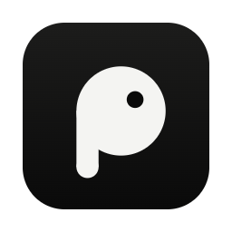

O Piu leva suas conversas de aparelho em aparelho, por Bluetooth, Wi-Fi e rádio. Sem servidor, sem operadora e cifrado de ponta a ponta. Quando a rede cai, a vizinhança continua conversando.
laptop_macTambém para Mac e Linuxarrow_forwardSe o destinatário está longe, sua mensagem pula entre celulares, roteadores e antenas da vizinhança até chegar. Se ninguém está por perto, ela espera guardada, cifrada, até surgir uma rota.
Toda mensagem sai cifrada do seu aparelho. Os celulares e roteadores no caminho só transportam um envelope fechado e minimizam o que fica registrado.
Ligue um roteador, um Raspberry Pi ou uma antena e ajude a vizinhança a se comunicar. Você recebe créditos por entrega comprovada, liquidados em LUNES. Tempo ligado e capacidade anunciada não contam: só entregas reais.
Quem já tem o Piu pode passar o app para o seu celular, sem internet. A cópia é conferida pela assinatura na primeira abertura.

Pareie com o celular pelo QR em segundos, restaure com as 12 palavras ou crie uma identidade só para o computador. Carteira, notificações do sistema e atalhos de teclado.
Sem internet e sem servidor central, o Piu usa os aparelhos que estão por perto para levar a sua mensagem. Esta página mostra o caminho inteiro, passo a passo.
O Piu usa o que estiver disponível, do mais simples ao mais longe. Toque numa camada para ver como ela funciona.
Antes de tudo, a Ana leu o QR do Bruno uma vez. A partir daí os dois celulares se reconhecem, mesmo sem internet.
Qualquer celular com o Piu pode carregar mensagens de outras pessoas, sem conseguir ler nenhuma. Antes de guardar, ele faz estas perguntas.
Texto curto vai pelo mais econômico. Arquivo grande, pelo mais rápido. Tudo ao mesmo tempo, com todos os vizinhos.
A transferência viaja como uma mensagem até encontrar um aparelho com internet. Pode levar horas ou dias, e é conferida antes de valer.
Uma padaria, uma escola, uma igreja. Quem passa por ali entra no Wi-Fi, e os celulares trocam mensagens entre si, mesmo sem internet. O roteador não precisa de nada novo.
O programa de recompensas ainda não abriu e nada é pago hoje. A base já existe: cada entrega pode ser comprovada sem revelar quem conversou com quem.
Instale, abra perto de quem você conhece e pronto: você já faz parte do caminho.